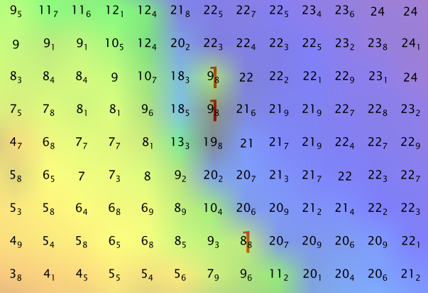
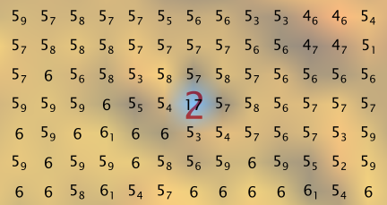
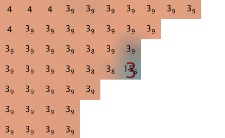
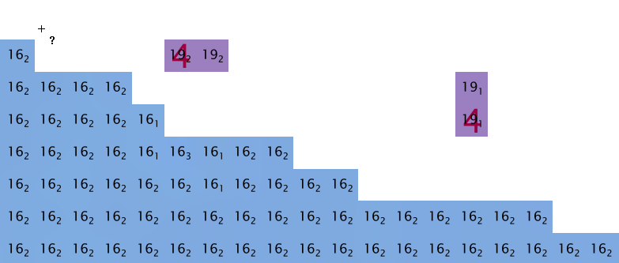

This document describes the HydrOffice QC Tools application (1.4). For the project page, go here.
2.1.3. Detect fliers¶
2.1.3.1. How To Use?¶
Scan grids for anomalous grid data “fliers”.
- Select the Detect fliers tab on the bottom of the QC Tools interface.
For Flier finder v2:
- In Parameters, enter the Flier height in meters.
- In Execution, click Find fliers v2.
For Flier finder v3, first consider Parameters:
- The Flier height will be determined automatically by the program and does not need to be set, but the user may choose to do so in order to run a specific Flier height.
- Default Checks are enabled and are recommended for standard use, but these too may be enabled or disabled in order to run custom checks (see the “How Does It Work?” section below).
To change the Parameters for Flier finder v3:
Click the Unlock button, and click OK to the dialogue.
If desired, enter a desired Flier search height in meters in the Force flier heights box.
- A single height may be entered to apply to all loaded grids, or multiple heights may be entered (separated by comma) to apply to each grid loaded.
- These values, if entered, will override any Estimated heights determined by the program.
Enable or Disable the specific Checks to run.

In Execution for Flier finder v3:
- Click Estimate heights to determine recommended flier search heights automatically based on the median depth, depth variability, and “roughness” of the grid(s) (see the “How Does It Work?” section below). The results will populate in Current flier heights in Parameters.
- Click Find fliers v3. After executing, the output window opens automatically, and the results are shown:
- From the output window, drag-and-drop the output into the processing software to guide the review.
2.1.3.2. How Does It Work?¶
Flier finder v2:
The grid is scanned, and any rise and fall pairings (for a shoal flier) or fall and rise pairings (for a deep flier) that both exceed the flier height parameter and that occur over a horizontal distance of 3 grid nodes will be flagged as a potential flier.
In other words, to register as a potential flier, there are three requirements:
- A depth change exceeding the flier height parameter.
- A depth change in the opposite direction as the first, also exceeding the flier height parameter.
- #1 and #2 must occur within 3 grid nodes horizontally.
To illustrate the requirements are four examples:
- In the below example, no flier is registered because there is no fall to pair with the rise.

- In the below example, no flier is registered because the fall does not occur within 3 grid nodes of the rise.

- In the below example, no flier is registered because the rise and fall pairing does not exceed the flier height parameter.

- In the below example, a flier is registered because the rise and fall pairings exceed the flier height parameter and occur within 3 grid nodes.

Flier Finder v2 is effective, but may result in excessive flags depending on how dynamic the seafloor is and the flier search height used.
Flier finder v3:
Estimate height:
First, a base height from the median depth of the grid is assigned:
| Depth Interval | Base height |
|---|---|
| if < 20 | 1.0 |
| if < 40 | 2.0 |
| if < 80 | 4.0 |
| if < 160 | 6.0 |
| if >= 160 | 8.0 |
Then, the base height is incrementally increased by the level of depth variability and roughness of the grid:
Depth variability is estimated by proxy using the Normalized Median of Absolute Deviation (NMAD) of the grid, which is derived by dividing the absolute difference of depth mean and depth median by depth standard deviation.
- The lower the NMAD, the more depth variability we estimate.
- An increase in the Base height of the flier search height estimation is warranted if NMAD is less than 0.20 (1 increase) or less than 0.10 (2 increases).
Roughness is estimated by the standard deviation of the Gaussian curvature (STD_CURV).
- The Gaussian curvature is a measure of concavity at each node, whether concave up (shoal) or concave down (deep).
- The higher the STD_CURV, the rougher the surface.
- An increase in the Base height of the flier search height estimation is warrented if STD_CURV is greater than 0.01 (1 increase) or greater than 0.10 (2 increases).
Increases are +2.0 meters, unless the Base height is 1.0 meter, then the increase is +1.0 meter. In this manner, Estimated flier heights are always on the interval scale of 1 (minimum), 2, 4, 6, 8, 10, 12, 14, 16 (maximum).
For example:
- if a surface has depth median = 12 m, NMAD = 0.15, and STD_CURV = 0.005, then the Estimated height = 2.0 m.
- if a surface has depth median = 75 m, NMAD = .04, and STD_CURV = 0.08, then the Estimated height = 10.0 m.
Checks:
Laplacian Operator
The Laplacian Operator is a measure of curvature at each node. It is equivalent to summing the depth gradients of the four nodes adjacent (north, south, east, and west) to each node. If the absolute value of the Laplacian Operator is greater than four times the flier search height, the node will be flagged.
In the example below, a 3 m flier search height would register 1 flag, while a 2 m flier search height would register 4 flags, and a 1m search height would register 7 flags.
| Depth Layer | Laplace | |||||||
|---|---|---|---|---|---|---|---|---|
| 9 | 9 | 9 | 9 | 0 | 1 | 0 | 3 | |
| 9 | 8 | 9 | 6 | 1 | 4 | 10 | 9 | |
| 9 | 9 | 3 | 9 | 0 | 7 | 24 | 9 | |
| 9 | 9 | 9 | 9 | 0 | 0 | 6 | 0 | |
The algorithm is effective, but may be prone to excessive flags, as demonstrated in the above example. Testing showed that it generally did not reveal fliers not already revealed by the other algorithms. For these reasons, it is disabled by default, but is recommended as an additional check in those situations when the other algorithms return very few or no flags.
The example below shows grid nodes (depths in meters) recommended for further examination by the Laplacian Operator (indicated by 1s) and a 6m estimated search height.
Gaussian Curvature
The Gaussian Curvature is a measure of concavity at each node. The gradients are taken in the x and y directions to establish gx and gy, and repeated on each gradient again in the x and y direction to establish gxx, gxy, gyx, and gyy (note that gxy = gyx). The gaussian curvature at each node is then determined by:
(gxx * gyy - (gxy * gyx)) / (1 + (gx^2) + (gy^2))^2
If the resulting gaussian curvature at a particular node is greater than 6, it will be flagged. Note that this algorithm is independent of flier search height.
In the example below, a single flier is found (regardless of flier height).
| Depth Layer | Gaussian Curvature | |||||||
|---|---|---|---|---|---|---|---|---|
| 9 | 9 | 9 | 9 | -1 | 0 | -1 | -.09 | |
| 9 | 8 | 9 | 6 | 0 | -2.3 | 0 | -.14 | |
| 9 | 9 | 3 | 9 | -2.5 | 0 | 20 | 0 | |
| 9 | 9 | 9 | 9 | 0 | -9 | 0 | -36 | |
Testing showed that the algorithm on occasion offered unique value by flagging a flier not captured by other algorithms, while also it is not prone to excessive flags. For these reasons this algorithm is enabled by default.
The example below shows grid nodes (depths in meters) and a deep flier found by the Gaussian Curvature (indicated by the red 2).
Adjacent Cells
This algorithm examines the nodes that are adjacent to a single node. There are a maximum of 8 adjacent nodes (N,NW,W,SW,S,SE,E,NE), but there could be less than 8 if the node resides on a grid edge. The depth is differenced with each adjacent cell, and the number of times the difference is greater in magnitude than the flier search height is tallied. If the ratio of this tally to the number of adjacent cells available is 0.8 or greater, then the node is flagged.
In the example below, a 3 m flier search height would register 2 flags, while a 2m search height would also register 2 flags, and a 1m search height would register 3 flags.
| Depth Layer | Adjacent Cells(3m) | |||||||
|---|---|---|---|---|---|---|---|---|
| 9 | 9 | 9 | 9 | 0 | 0 | .2 | .33 | |
| 9 | 8 | 9 | 6 | 0 | .13 | .25 | 1 | |
| 9 | 9 | 3 | 9 | 0 | 0 | 1 | .4 | |
| 9 | 9 | 9 | 9 | 0 | .2 | .2 | .33 | |
Testing showed that the Adjacent Cells algorithm offers unique value by flagging fliers not captured by the other algorithms (especially those residing on grid edges), and is not as prone to excessive flagging as the Laplacian Operator. For these reasons, it is enabled by default.
The example below shows grid nodes (depths in meters) and the type of flier that Adjacent Cells (indicated by the red 3) identifies with particular effectiveness, in this case with a 4m search height.
Edge Slivers
The Edge Slivers algorithm identifies small groups of connected nodes (3 nodes or less) that are detached (but within 5 nodes) from the grid. If the depth difference between the nearest detached node and the valid connection to the grid is greater than half the flier search height, a flag is registered.
Testing showed that the algorithm offers unique value by identifying the quite common fliers that result in areas of sparse data density. For this reason, it is enabled by default.
The example below shows grid nodes (depths in meters) and the type of detached nodes that Edge Slivers flags, in this case with a 4m search height.
Isolated Nodes
The Isolated Nodes algorithm identifies small groups of connected nodes (3 nodes or less) that are detached (but outside of 5 nodes) of the grid. Effectively it is identifying the remaining isolated nodes not caught by Edge Slivers, however, it is independent of flier search height, meaning that all small groups of isolated nodes will be flagged.
Testing shows that the algorithm offers unique value by identifying nodes far detached from the grid that the reviewer may wish to exclude. Because it is identifying any detached nodes and not considering their associated depth, it is largely considered a separate tool to be used on an “as-needed” basis. Therefore, it is not enabled by default.
The example below shows a grid node far detached from the main grid, found by Isolated Nodes (indicated by a red 5).
Which Flier Finder Algorithm Should I Use?
For basic use:
- Flier Finder v3 with the default options is recommended and is intended as a standardized operation of this tool.
- Simply click Estimate Height, and after the program determines a recommended flier search height, click Find fliers v3 (see the “How To Use?” section above).
For advanced use:
- If the default options generate too few flags, and/or it is desired to perform a custom search, you may force a smaller flier height, and/or utilize another algorithm, such as the “Laplace Operator” or “Flier Finder v2”.
- The “Isolated Nodes” algorithm is used to find nodes detached from the grid and is an independent check to be used on an as-needed basis.
A summary of the checks is shown in the table below, and also see the “How Does It Work?” section to understand how each check works. Unique value means that the check was observed to flag a real flier during testing that none of the other checks captured.
| v2 | v3 Lap #1 | v3 Gau #2 | v3 Adj #3 | v3 Edg #4 | v3 Iso #5 | |
|---|---|---|---|---|---|---|
| Unique value proven | o | o | o | o | ||
| Flier height required | o | o | o | o | ||
| Prone to excessive flags | o | o | o | |||
| Enabled by default | o | o | o | |||
| Use on as-needed basis | o | o | o |